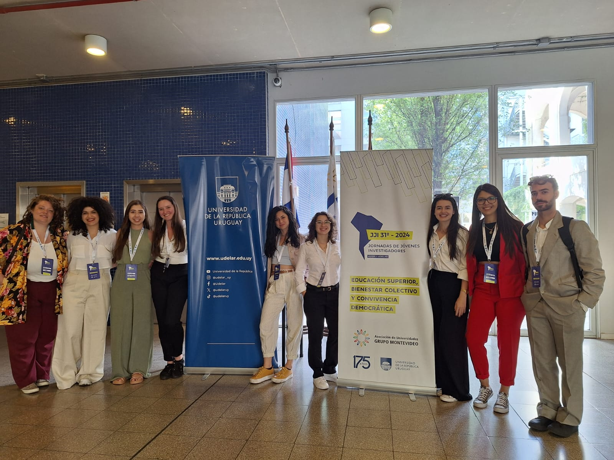
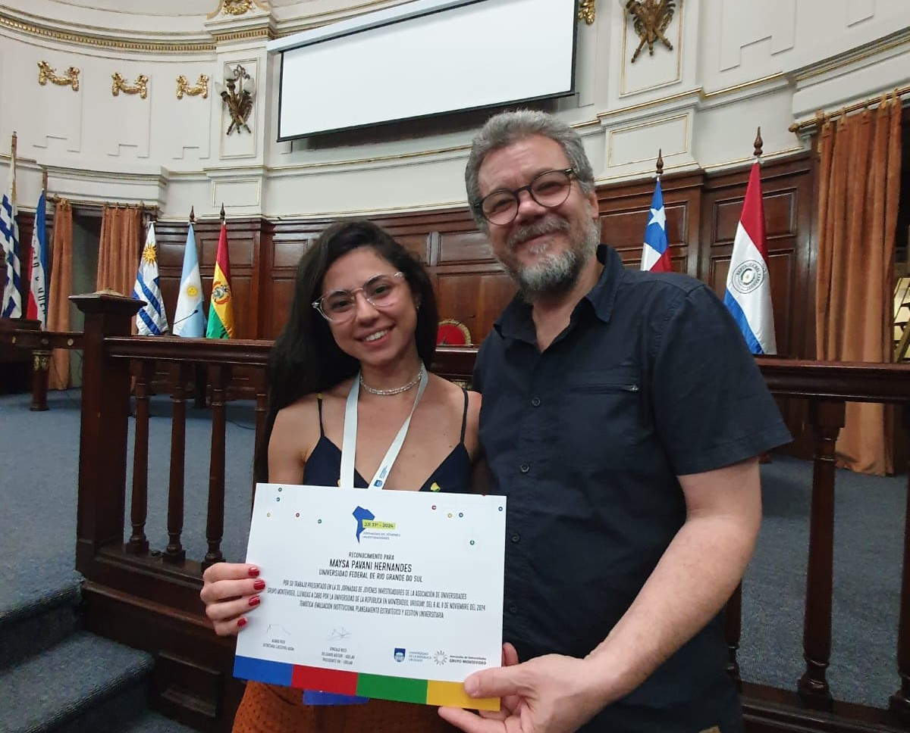
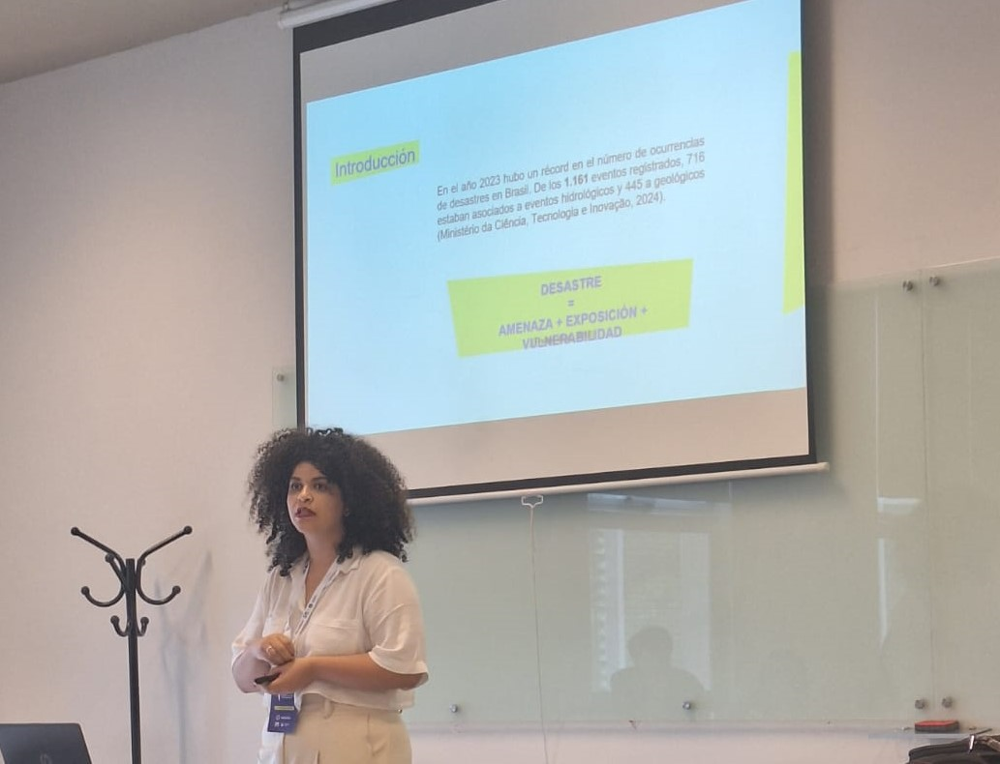

Nos dias 6, 7 e 8 de novembro, nove alunos da Universidade Federal do Rio Grande (FURG) participaram da 31ª Jornada de Jovens Pesquisadores, realizada em Montevidéu, no Uruguai. O evento foi sediado na Universidade da República e promovido pela Associação de Universidades Grupo Montevideo (AUGM), abordando o tema central “Ensino Superior, Bem-Estar Coletivo e Convivência Democrática”.
A conferência reuniu jovens pesquisadores de universidades da América Latina, para promover intercâmbio de conhecimentos multidisciplinares. Os pesquisadores Fernanda Duarte Avila, Isabel Spies, Lara Leite, Laura Silva, Manoela Kaul, Mariana da Cunha Aires, Maysa Hernandes, Nicolle Lopes e Pedro Santos representaram a FURG na conferência com trabalhos de diferentes áreas de estudo, como Psicologia, Relações Internacionais e Medicina. As pesquisas apresentadas contemplam uma ampla gama de eixos temáticos, como saúde humana, bem-estar coletivo, gestão universitária, atenção primária à saúde e ciências sociais.
Representantes da FURG na 31ª Jornada de Jovens Pesquisadores.
Durante o evento, os pesquisadores puderam conhecer instituições de saúde da Intendência de Montevidéu, onde visitaram três centros de referência em atenção primária: o Complejo Sacude, o Complejo Flor de Maroñas e a Policlínica Luísa Tiraparé, esta última com destaque para o atendimento e promoção à saúde de deficientes auditivos. Esses centros vão além dos serviços tradicionais de saúde, integrando também atividades de cultura e esporte.
O trabalho “Prevalência de sintomas de ansiedade social e fatores associados entre Estudantes Universitários”, apresentado pela Mestranda em Psicologia Maysa Hernandes, foi selecionado como o destaque do Eixo 03: “Evaluación Institucional, Planeamiento Estratégico y Gestión Universitaria” durante a Jornada de Jovens Investigadores. A pesquisadora explica que, apesar de ter sido escrito e apresentado por ela, esse trabalho é um esforço de um grupo de pesquisadores do SABES-Grad - Pesquisa em Saúde e Bem-Estar na Graduação. Após receber a menção honrosa, Maysa comenta a importância do reconhecimento por meio da conferência: “Não só é um trabalho que eu fiz, mas que é um trabalho que nós fizemos como um grupo de pesquisa com todas essas pessoas muito boas, muito qualificadas, muito potentes trabalhando junto para produzir esse conhecimento e com muita com muita robustez, com muita seriedade, um método muito bem desenhado. E quando a gente apresenta esse trabalho com esse nível de qualidade num congresso internacional e é reconhecido é incrível, é uma sensação muito boa, muito".
Trabalho destaque do Eixo 03.
Em relato sobre sua experiência na JJI, a mestranda em psicologia Laura Silva conta como participar destes eventos é enriquecedor para os pesquisadores. “Às vezes a jornada do pesquisador é muito solitária. A gente passa muito tempo trabalhando sozinho e às vezes até se questionando sobre a qualidade do nosso trabalho, sobre as nossas escolhas acadêmicas. E sempre que existe essa oportunidade de trocar, a gente volta com muita motivação. Esse evento foi importante para mim para reforçar o quanto o trabalho que eu venho desenvolvendo é importante, o quanto eu tenho que seguir nessa trajetória”, diz a psicóloga.
Mariana da Cunha Aires também cursa o mestrado em Psicologia na FURG e relata que a participação da conferência renovou suas motivações para a pesquisa acadêmica. “Quando eu recebi o resultado que tinha sido selecionada, eu fiquei muito entusiasmada, mas eu não imaginava como seria essa experiência para mim. A gente trabalha com correria, com metas, com prazos, e por vezes a gente se perde nesse caminho acadêmico (...) Voltei de lá com uma vontade de escrita, com uma criatividade aflorada, com uma vontade de me dedicar para minha pesquisa, muito maior.”, afirma a pesquisadora.
Apresentação do Trabalho da Psicóloga Lara Leite.
Como muitos estudantes, Pedro Santos, aluno de Relações Internacionais, optou por apresentar seu trabalho na língua portuguesa. “Preferi desenvolver o trabalho em Português mesmo, já que o escrevi nesse idioma. Senti que usei muito do espanhol também, para que todos pudessem compreender alguns termos chaves. No fim, foi um sucesso. Uma das experiências mais emocionantes da minha trajetória”, relata o estudante. A mestranda em Psicologia, Lara Leite, comenta o que contribuiu para a transmissão de conhecimento, apesar da divergência de idiomas na conferência. “Não sei se solidariedade é a palavra, mas havia um desejo de que todo mundo se compreendesse.” Lara aponta o esforço dos pesquisadores para a compreensão geral, seja por meio da tradução de slides ou pela diminuição do ritmo da fala como um dos responsáveis por este sentimento. “Ao mesmo tempo que por um momento eu fiquei com medo de que o idioma fosse uma barreira, ele não foi, porque eu senti que tinha esse senso de camaradagem, de solidariedade entre todos os participantes e o desejo de que todo mundo pudesse compreender, participar, falar, perguntar”, diz a psicóloga.
Quem sintetiza o sentimento geral dos pesquisadores participantes é a psicóloga Laura Silva. A estudante revela que o evento foi importante por mostrar como os pesquisadores de outros países lidam com adversidades na pesquisa acadêmica e ensino superior comuns ao cenário brasileiro. “Participar desses eventos acadêmicos acho que é uma experiência indispensável na trajetória de qualquer estudante pesquisador, porque é justamente por meio dessas experiências de trocas, de interculturais, interdisciplinares, que a gente tem a possibilidade de qualificar o nosso trabalho, de também ganhar mais motivação, mais experiência para continuar as nossas trajetórias e eu incentivaria fortemente que todos os estudantes da FURG ficassem atentos aos processos seletivos da REINTER e participassem também.”, conta a participante.
FURG Students Participate in the 31st Young Researchers Conference in Montevideo
On November 6, 7, and 8, nine students from the Federal University of Rio Grande (FURG) participated in the 31st Young Researchers Conference held in Montevideo, Uruguay. The event was hosted by the University of the Republic and promoted by the Montevideo Group Association of Universities (AUGM), focusing on the central theme: “Higher Education, Collective Well-Being, and Democratic Coexistence.”
The conference brought together young researchers from Latin American universities to promote multidisciplinary knowledge exchange. Researchers Fernanda Duarte Avila, Isabel Spies, Lara Leite, Laura Silva, Manoela Kaul, Mariana da Cunha Aires, Maysa Hernandes, Nicolle Lopes, and Pedro Santos represented FURG, presenting studies in various fields, such as Psychology, International Relations, and Medicine. The research topics covered a wide range of themes, including human health, collective well-being, university management, primary healthcare, and social sciences.
During the event, the researchers visited health institutions managed by the Montevideo City Government, exploring three primary healthcare centers: Complejo Sacude, Complejo Flor de Maroñas, and Policlínica Luísa Tiraparé, the latter being a reference in healthcare promotion for individuals with hearing impairments. These centers go beyond traditional health services, incorporating cultural and sports activities.
The study “Prevalence of Social Anxiety Symptoms and Associated Factors Among University Students” presented by Psychology master’s student Maysa Hernandes, was selected as a highlight in Axis 03: “Institutional Evaluation, Strategic Planning, and University Management.” Maysa emphasized that the study, although presented by her, represents a collective effort by the SABES-Grad research group (Health and Well-Being in Undergraduate Studies). After receiving an honorable mention, Maysa reflected on the significance of the recognition. “This isn’t just my work; it’s something we’ve done as a research group, involving talented, highly qualified individuals who work hard to produce robust and serious research. Presenting this at an international conference and being recognized is an incredible feeling.”
Sharing her experience at the conference, Psychology master’s student Laura Silva explained how participating in such events enriches researchers. “Sometimes, the research journey feels very lonely. We spend a lot of time working alone, questioning the quality of our work and our academic choices. Opportunities like this remind us of the importance of our research and reinvigorate our motivation to keep going,” she said.
Another Psychology master’s student, Mariana da Cunha Aires, shared how the conference renewed her passion for academic research. “When I learned I had been selected, I was thrilled, but I didn’t imagine how transformative this experience would be for me. We often get caught up in deadlines and lose sight of our academic purpose. I returned with a renewed drive for writing, creativity, and dedication to my research,” she noted.
Like many students, International Relations undergraduate Pedro Santo chose to present his work in Portuguese. “I preferred to develop my presentation in Portuguese since it was originally written in that language. I included some Spanish so everyone could understand key terms. In the end, it was a success—one of the most exciting experiences of my academic journey,” he said.
Lara Leite, also a Psychology master’s student, highlighted how participants overcame language barriers to foster knowledge exchange. “I don’t know if solidarity is the right word, but there was a genuine desire for everyone to understand each other,” she said. Lara mentioned efforts such as translating slides and slowing speech to ensure inclusivity. “At first, I was afraid the language would be a barrier, but it wasn’t. There was a sense of camaraderie and solidarity among participants to ensure everyone could communicate, ask questions, and fully participate.”
Laura Silva summarized the researchers’ overall sentiment, emphasizing the importance of events like this in addressing shared challenges in academic research and higher education across countries. “Participating in these academic events is an indispensable experience for any student-researcher. It is through these interdisciplinary and intercultural exchanges that we can enhance our work, gain motivation, and grow in our academic journeys. I strongly encourage all FURG students to pay attention to REINTER selection processes and seize these opportunities,” she concluded.